-
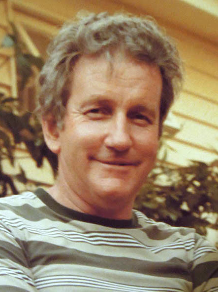The following texts were written in the 1970s by Hubert Benjamin Schneider (1928 - 2005)
The author of this page:
Hugh Schneider
Note: These are old texts and therefore contain what was known at the time. Considering that, they are impressive records of what could be achieved before the advent of the internet and the recent upsurge in interest and availability of resources for family research. Over the years much of this material has made its way into other genealogies. Spelling and Pronunciation Even though Berg (mountain) and Burg (castle or village) (as endings of place names) are pronounced the same way in English, they are two totally different words. Some incorrect words are followed by an asterisk *, for instance: WURTTENBURG* = should be Württemberg (or Wuerttemberg) WURTENBURG* = should be Württemberg (or Wuerttemberg) WEINSBURG* = should be Weinsberg MAUNSBERG* = should be Weinsberg The side column shows the original pages and often some updates regarding speculations. The pictures can be enlarged by clicking on them.
Page 1
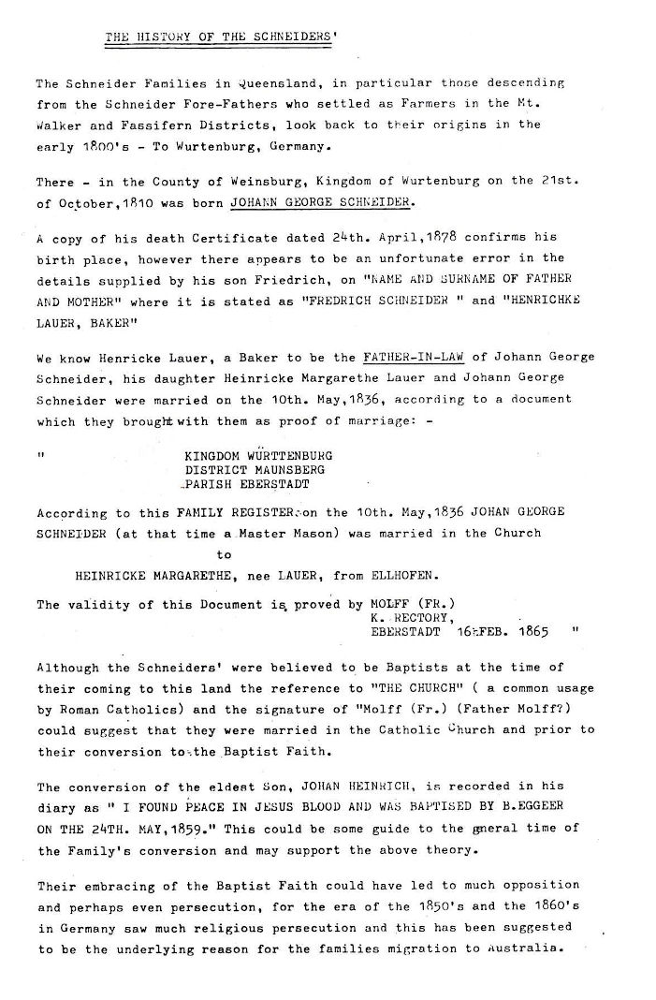Page 2
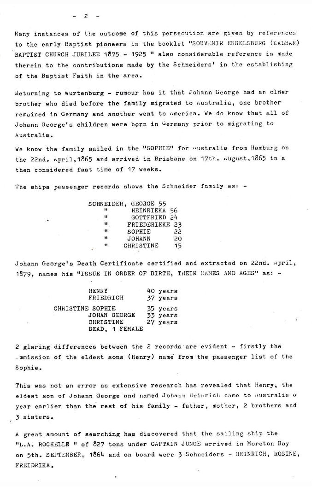THE HISTORY OF THE SCHNEIDERS
The Schneider Families in Queensland, in particular those descending from the Schneider Fore-Fathers who settled as Farmers in the Mt. Walker and Fassifern Districts, look back to their origins in the early 1800's - To Wurtenburg*, Germany.
There - in the County of Weinsburg*, Kingdom of Wurtenburg* on the 21st. of October,1810 was born JOHANN GEORGE SCHNEIDER.
A copy of his death Certificate dated 24th. April, 1878 confirms his birth place, however there appears to be an unfortunate error in the details supplied by his son Friedrich, on "NAME AND SURNAME OF FATHER AND MOTHER" where it is stated as "FREDRICH SCHNEIDER " and "HENRICHKE LAUER, BAKER".
We know Henricke* (= Heinrich) Lauer, a Baker to be the FATHER-IN-LAW of Johann George Schneider. His daughter, Heinricke Margarethe Lauer, and Johann George Schneider were married on the 10th. May, 1836, according to a document which they brought with them as proof of marriage: -
KINGDOM WÜRTTENBURG* (= Württemberg)
DISTRICT MAUNSBERG* (= Weinsberg)
PARISH EBERSTADT
According to this FAMILY REGISTER:
on the 10th. May,1836 JOHAN GEORGE SCHNEIDER (at that time a Master Mason) was married in the Church
to
HEINRICKE MARGARETHE, nee LAUER, from ELLHOFEN.
The validity of this Document is proved by MOLFF* (= Wolff) (FR.)
K. RECTORY,
EBERSTADT 16 FEB. 1865
Although the Schneiders were believed to be Baptists at the time of their coming to this land the reference to "THE CHURCH" (a common usage by Roman Catholics) and the signature of "Molff* (Fr.) (Father Molff?) could suggest that they were married in the Catholic Church and prior to their conversion to the Baptist Faith.
The conversion of the eldest Son, JOHAN HEINRICH, is recorded in his diary as "I FOUND PEACE IN JESUS BLOOD AND WAS BAPTISED BY B. EGGEER* (= Eggler) ON THE 24TH. MAY, 1859." This could be some guide to the general time of the Family's conversion and may support the above theory.
Their embracing of the Baptist Faith could have led to much opposition and perhaps even persecution, for the era of the 1850's and the 1860's in Germany saw much religious persecution and this has been suggested to be the underlying reason for the families migration to Australia.
Many instances of the outcome of this persecution are given by references to the early Baptist pioneers in the booklet "SOUVENIR ENGELSBURG (KALBAR) BAPTIST CHURCH JUBILEE 1875 - 1925" also considerable reference is made therein to the contributions made by the Schneiders in the establishing of the Baptist Faith in the area.
The rumour of a deceased brother proved to be correct. In 1815, Johann Georg's older brother, Georg Karl, died from Tuberculosis at the age of 19.
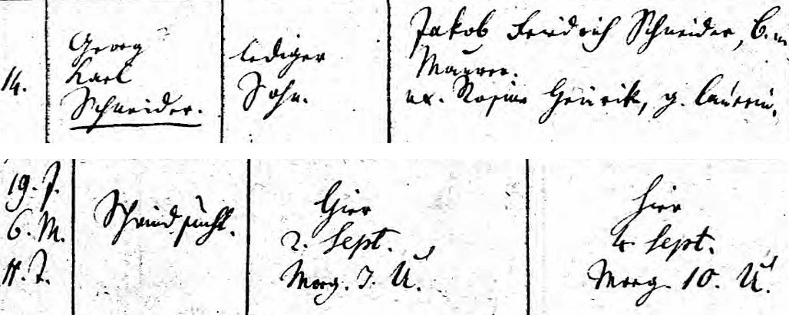1836 Marriage of Johann Georg Schneider and Heinrike Margarethe Lauer (whose father, Johann Martin Lauer, was a baker in Ellhofen, not Hamburg)
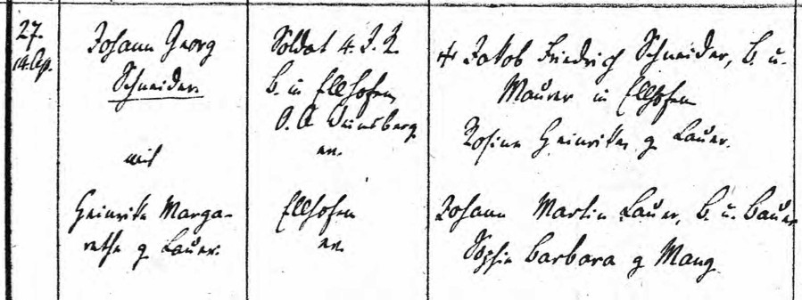The "Sophie"

Page 3
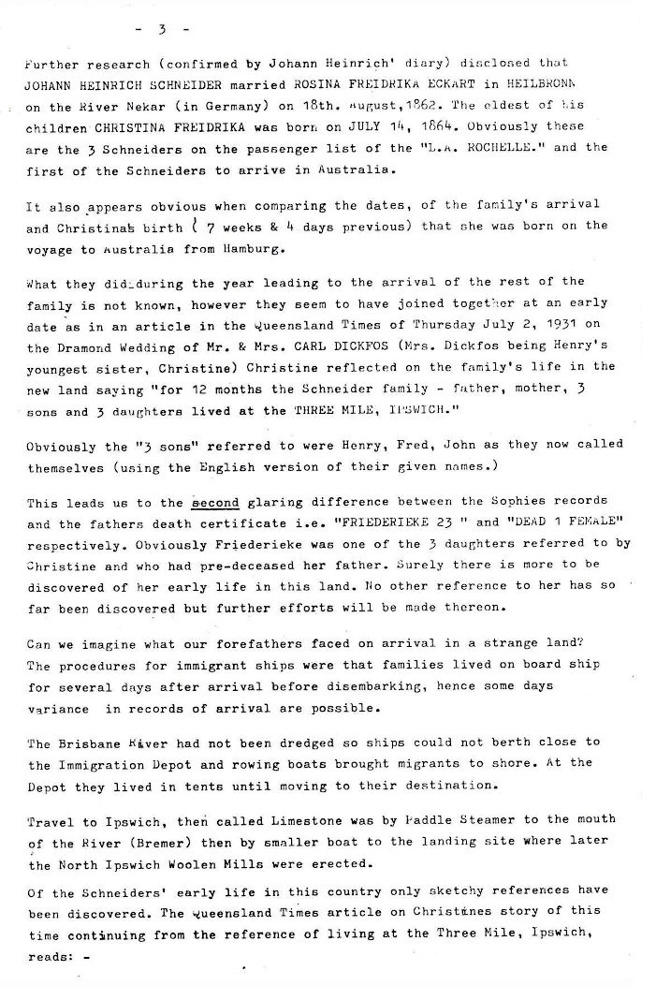1862 Marriage of Johann Heinrich Schneider and Rosine Friederike Eckert
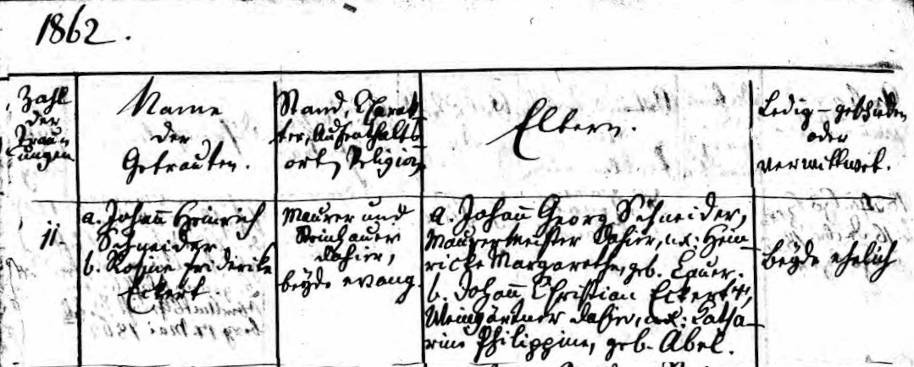The "La Rochelle"
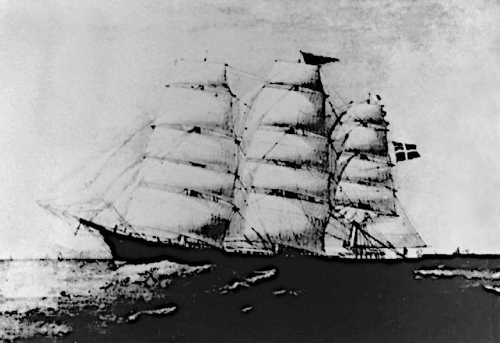1863 June 5 Birth of Friederike Christine Schneider who was 6 months old when Henry and Rosine left Hamburg and not born on the ship.
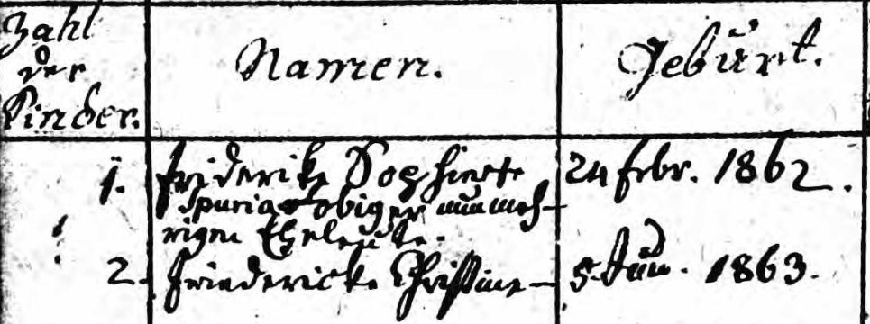
The earlier daughter, Friederike Sophie, died in 1863 before reaching 2 years old.Page 4
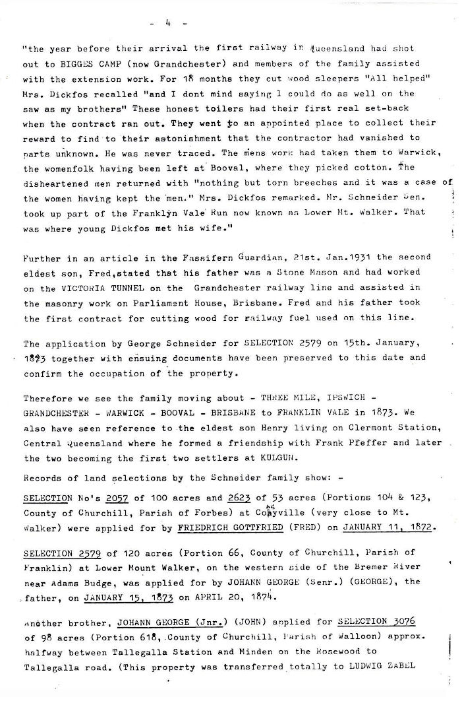Page 5
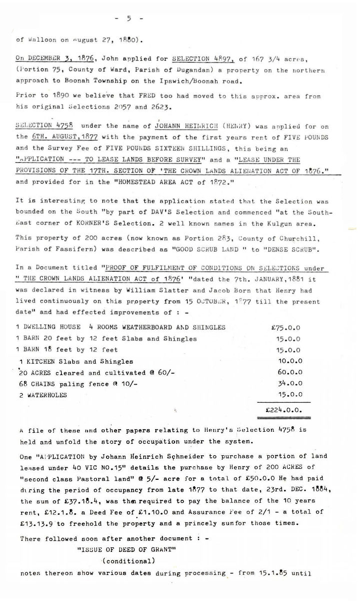Page 6
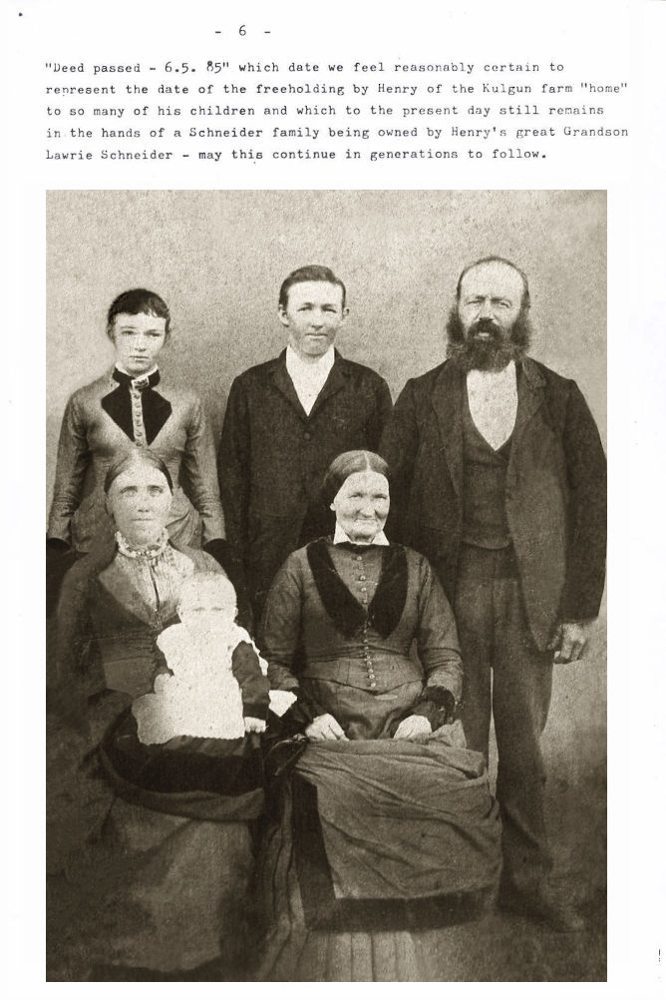
Returning to Wurtenburg* - rumour has it that Johann George had an older brother who died before the family migrated to Australia, one brother remained in Germany and another went to America. We do know that all of Johann George's children were born in Germany prior to migrating to Australia.
We know the family sailed in the "SOPHIE" for Australia from Hamburg on the 22nd. April, 1865 and arrived in Brisbane on 17th. August, 1865 in a then considered fast time of 17 weeks.
The ships passenger records shows the Schneider family as: -
SCHNEIDER, GEORGE 55 HEINRIEKA 56 GOTTFRIED 24 FRIEDERIEKE 23 SOPHIE 22 JOHANN 20 CHRISTINE 15Johann George's Death Certificate certified and extracted on 22nd. April, 1879,
names his "ISSUE IN ORDER OF BIRTH, THEIR NAMES AND AGES" as: -
HENRY 40 years FRIEDRICH 37 years CHRISTINE SOPHIE 35 years JOHAN GEORGE 33 years CHRISTINE 27 years DEAD, 1 FEMALE
2 glaring differences between the 2 records are evident - firstly the ommission of the eldest son's (Henry) name from the passenger list of the Sophie.
This was not an error as extensive research has revealed that Henry, the eldest son of Johann George and named Johann Heinrich came to Australia a year earlier than the rest of his family - father, mother, 2 brothers and 3 sisters.
A great amount of searching has discovered that the sailing ship the "LA ROCHELLE" of 827 tons under CAPTAIN JUNGE arrived in Moreton Bay on 5th. SEPTEMBER, 1864 and on board were 3 Schneiders - HEINRICH, ROSINE, FREIDRIKA.
Further research (confirmed by Johann Heinrich's diary) disclosed that JOHANN HEINRICH SCHNEIDER married ROSINA FREIDRIKA ECKART in HEILBRONN on the River Neckar (in Germany) on 18th. August, 1862. The eldest of his children CHRISTINA FREIDRIKA was born on JULY 14, 1864. Obviously these are the 3 Schneiders on the passenger list of the "L.A. ROCHELLE." and the first of the Schneiders to arrive in Australia.
It also appears obvious when comparing the dates, of the family's arrival and Christina's birth (7 weeks & 4 days previous) that she was born on the voyage to Australia from Hamburg.
What they did during the year leading to the arrival of the rest of the family is not known, however they seem to have joined together at an early date as in an article in the Queensland Times of Thursday July 2, 1931 on the Diamond Wedding of Mr. & Mrs. CARL DICKFOS (Mrs. Dickfos being Henry's youngest sister, Christine) Christine reflected on the family's life in the new land saying "for 12 months the Schneider family - father, mother, 3 sons and 3 daughters lived at the THREE MILE, IPSWICH."
Obviously the "3 sons" referred to were Henry, Fred, John as they now called themselves (using the English version of their given names.)
This leads us to the second glaring difference between the Sophie's records and the fathers death certificate i.e. "FRIEDERIEKE 23 " and "DEAD 1 FEMALE" respectively. Obviously Friederieke was one of the 3 daughters referred to by Christine and who had pre-deceased her father. Surely there is more to be discovered of her early life in this land. No other reference to her has so far been discovered but further efforts will be made thereon.
Can we imagine what our forefathers faced on arrival in a strange land? The procedures for immigrant ships were that families lived on board ship for several days after arrival before disembarking, hence some days variance in records of arrival are possible.
The Brisbane River had not been dredged so ships could not berth close to the Immigration Depot and rowing boats brought migrants to shore. At the Depot they lived in tents until moving to their destination.
Travel to Ipswich, then called Limestone was by Paddle Steamer to the mouth of the River (Bremer) then by smaller boat to the landing site where later the North Ipswich Woollen Mills were erected.
Of the Schneiders' early life in this country only sketchy references have been discovered. The Queensland Times article on Christines story of this time continuing from the reference of living at the Three Mile, Ipswich, reads: -
"the year before their arrival the first railway in Queensland had shot out to BIGGES CAMP (now Grandchester) and members of the family assisted with the extension work. For 18 months they cut wood sleepers "All helped" Mrs. Dickfos recalled "and I don't mind saying 1 could do as well on the saw as my brothers". These honest toilers had their first real set-back when the contract ran out. They went to an appointed place to collect their reward to find to their astonishment that the contractor had vanished to parts unknown. He was never traced. The mens work had taken them to Warwick, the womenfolk having been left at Booval, where they picked cotton. The disheartened men returned with "nothing but torn breeches and it was a case of the women having kept the men", Mrs. Dickfos remarked. Mr. Schneider Sen. took up part of the Franklin Vale Run now known as Lower Mt. Walker. That was where young Dickfos met his wife."
Further in an article in the Fassifern Guardian, 21st. Jan, 1931 the second eldest son, Fred, stated that his father was a Stone Mason and had worked on the VICTORIA TUNNEL on the Grandchester railway line and assisted in the masonry work on Parliament House, Brisbane. Fred and his father took the first contract for cutting wood for railway fuel used on this line.
The application by George Schneider for SELECTION 2579 on 15th. January, 1873 together with ensuing documents have been preserved to this date and confirm the occupation of the property.
Therefore we see the family moving about - THREE MILE, IPSWICH - GRANDCHESTER - WARWICK - BOOVAL - BRISBANE to FRANKLIN VALE in 1873. We also have seen reference to the eldest son Henry living on Clermont Station, Central Queensland where he formed a friendship with Frank Pfeffer and later the two becoming the first two settlers at KULGUN.
Records of land selections by the Schneider family show: -
SELECTION No's 2057 of 100 acres and 2623 of 53 acres (Portions 104 & 123, County of Churchill, Parish of Forbes) at Colyville (very close to Mt. Walker) were applied for by FRIEDRICH GOTTFRIED (FRED) on JANUARY 11, 1872.
SELECTION 2579 of 120 acres (Portion 66, County of Churchill, Parish of Franklin) at Lower Mount Walker, on the western side of the Bremer River near Adams Budge, was applied for by JOHANN GEORGE (Senr.) (GEORGE), the father, on JANUARY 15, 1873 on APRIL 20, 1874.
Another brother, JOHANN GEORGE (Jnr.) (JOHN) applied for SELECTION 3076 of 98 acres (Portion 618, County of Churchill, Parish of Walloon) approx. halfway between Tallegalla Station and Minden on the Rosewood to Tallegalla road. (This property was transferred totally to LUDWIG ZABEL of Walloon on August 27, 1880).
On DECEMBER 3, 1876, John applied for SELECTION 4897, of 167 3/4 acres, (Portion 75, County of Ward, Parish of Dugandan) a property on the northern approach to Boonah Township on the Ipswich/Boonah road.
Prior to 1890 we believe that FRED too had moved to this approx. area from his original Selections 2057 and 2623.
SELECTION 4758 under the name of JOHANN HEINRICH (HENRY) was applied for on the 6TH. AUGUST, 1877 with the payment of the first years rent of FIVE POUNDS and the Survey Fee of FIVE POUNDS SIXTEEN SHILLINGS, this being an "APPLICATION --- TO LEASE LANDS BEFORE SURVEY" and a "LEASE UNDER THE PROVISIONS OF THE 17TH. SECTION OF THE CROWN LANDS ALIENATION ACT OF 1876" and provided for in the "HOMESTEAD AREA ACT of 1872".
It is interesting to note that the application stated that the Selection was bounded on the South "by part of DAV'S Selection and commenced at the South-East corner of KORNER'S Selection", 2 well known names in the Kulgun area. This property of 200 acres (now known as Portion 283, County of Churchill, Parish of Fassifern) was described as "GOOD SCRUB LAND" to "DENSE SCRUB". In a Document titled "PROOF OF FULFILMENT OF CONDITIONS ON SELECTIONS under . THE CROWN LANDS ALIENATION ACT of 1876" dated the 7th. JANUARY, 1881 it was declared in witness by William Slatter and Jacob Born that Henry had lived continuously on this property from 15th October 1877 till the present date" and had effected improvements of :-
1 DWELLING HOUSE 4 ROOMS WEATHERBOARD AND SHINGLES £75.0.0 1 BARN 20 feet by 12 feet Slabs and Shingles 15.0.0 1 BARN 15 feet by 12 feet 15.0.0 1 KITCHEN Slabs and Shingles 10.0.0 20 ACRES cleared and cultivated d 60/- 60.0.0 68 CHAINS paling fence + 10/- 34.0.0 2 WATERHOLES 15.0.0 -------- £224.0.0
A file of these and other papers relating to Henry's Selection 4758 is held and unfold the story of occupation under the system.
One "APPLICATION by Johann Heinrich Schneider to purchase a portion of land leased under 40 VIC NO.15" details the purchase by Henry of 200 ACRES of "second class Pastoral land" @ 5/- acre for a total of £50.0.0 He had paid during the period of occupancy from late 1877 to that date, 23rd. DEC. 1884, the sum of £37.18.4, was then required to pay the balance of the 10 years rent, £12.1.8. a Deed Fee of £1.10.0 and Assurance Fee of 2/1 - a total of £13.13.9 to freehold the property and a princely sum for those times.
There followed soon after another document : - "ISSUE OF DEED OF GRANT" (conditional) notes thereon show various dates during processing - from 15.1.85 until
"Deed passed - 6.5.85" which date we feel reasonably certain to represent the date of the freeholding by Henry of the Kulgun farm "home" to so many of his children and which to the present day still remains in the hands of a Schneider family being owned by Henry's great Grandson Lawrie Schneider - may this continue in generations to follow.
Historical Data and RemarksPage 7
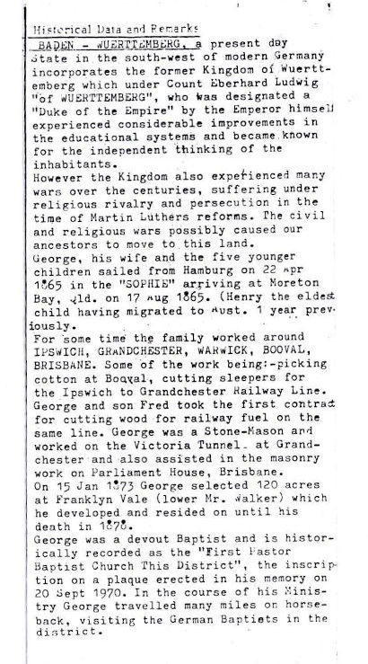
BADEN - WUERTTEMBERG, a present day State in the south-west of modern Germany incorporates the former Kingdom of Wuerttemberg which under Count Eberhard Ludwig "of WUERTTEMBERG", who was designated a "Duke of the Empire" by the Emperor himself experienced considerable improvements in the educational systems and became known for the independent thinking of the inhabitants.
However the Kingdom also experienced many wars over the centuries, suffering under religious rivalry and persecution in the time of Martin Luther's reforms. The civil and religious wars possibly caused our ancestors to move to this land.
George, his wife and the five younger children sailed from Hamburg on 22 Apr 1865 in the "SOPHIE" arriving at Moreton Bay, Qld. on 17 Aug 1865. (Henry the eldest child having migrated to Aust. 1 year previously.
For some time the family worked around IPSWICH, GRANDCHESTER, WARWICK, BOOVAL, BRISBANE. Some of the work being:- picking cotton at Booval, cutting sleepers for the Ipswich to Grandchester Railway Line. George and son Fred took the first contract for cutting wood for railway fuel on the same line. George was a Stone-Mason and worked on the Victoria Tunnel at Grandchester and also assisted in the masonry work on Parliament House, Brisbane.
On 15 Jan 1875 George selected 120 acres at Franklyn Vale (lower Mt. Walker) which he developed and resided on until his death in 1878.
George was a devout Baptist and is historically recorded as the "First Pastor, Baptist Church, This District", the inscription on a plaque erected in his memory on 20 Sept 1970. In the course of his Ministry George travelled many miles on horse-back, visiting the German Baptists in the district.
JOHANN GEORGE SCHNEIDER : SON OF FREDRICH SCHNEIDERPage 8
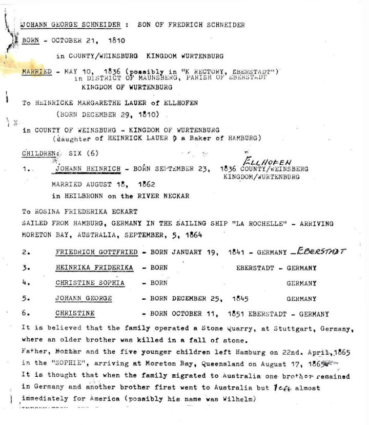
BORN - OCTOBER 21, 1810 in COUNTY/WEINSBURG* KINGDOM WURTENBURG* MARRIED - MAY 10, 1836 (possibly in "K RECTORY, EBERSTADT") in DISTRICT OF MAUNSBERG*, PARISH OF EBERSTADT KINGDOM OF WURTENBURG* To HEINRICKE MARGARETHE LAUER of ELLHOFEN (BORN DECEMBER 29, 1810) in COUNTY OF WEINSBURG* - KINGDOM OF WURTENBURG* (daughter of HEINRICK LAUER, a Baker of HAMBURG) CHILDREN: SIX (6) 1. JOHANN HEINRICH - BORN SEPTEMBER 23, 1836, ELLHOFEN, COUNTY WEINSBERG, KINGDOM WURTENBURG* MARRIED AUGUST 18, 1862 in HEILBRONN on the RIVER NECKAR, To ROSINA FRIEDERIKA ECKART SAILED FROM HAMBURG, GERMANY IN THE SAILING SHIP "LA ROCHELLE" - ARRIVING MORETON BAY, AUSTRALIA, SEPTEMBER, 5, 1864 2. FRIEDRICH GOTTFRIED - BORN JANUARY 19, 1841 - GERMANY EBERSTADT 3. HEINRIKA FRIDERIKA - BORN EBERSTADT - GERMANY 4. CHRISTINE SOPHIA - BORN GERMANY 5. JOHANN GEORGE - BORN DECEMBER 25, 1845 GERMANY 6. CHRISTINE - BORN OCTOBER 11, 1851 EBERSTADT - GERMANY
It is believed that the family operated a Stone quarry, at Stuttgart, Germany, where an older brother was killed in a fall of stone.Once again, the family legend was true. Johann Georg's son Friedrich Karl died in 1859, aged 21, single, Baptist, aged 21yrs 6mths, broke neck by unlucky fall from scaffold in Hölzern 12 Nov. 7:00

Father, Mother and the five younger children left Hamburg on 22nd. April, 1865 in the "SOPHIE", arriving at Moreton Bay, Queensland on August 17, 1865.
It is thought that when the family migrated to Australia one brother remained in Germany and another brother first went to Australia but left almost immediately for America (possibly his name was Wilhelm)
JOHANN HEINRICH "HENRY" SCHNEIDERPage 9
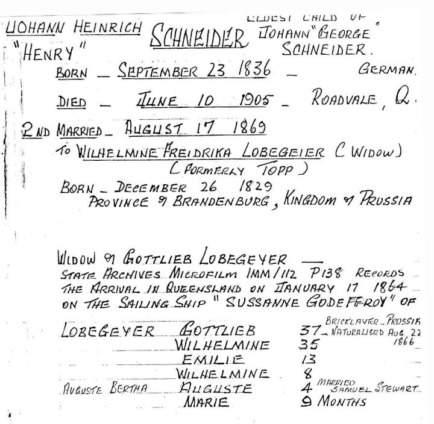
eldest son of Johann "George" Schneider
Born - September 23, 1836 - Germany
Died - June 10, 1905 - Roadvale, Qld
2nd Married - August 17, 1869
to Wilhelmine Friederika Lobegeier (widow)
(formerly Topp)
Born - December 26, 1829
Province of Brandenburg, Kingdom of Prussia
Widow of Gottlieb Lobegeyer -
State Archives Microfilm IMM/112 P138 records
the arrival in Queensland on January 17, 1864
on the sailing ship "Susanne Godeffroy" of
Lobegeyer Gottlieb 37 Bricklayer Prussia Naturalised Aug 22, 1866 Wilhelmine 35 Emelie 13 Wilhelmine 8 Married Samuel Stewart Auguste 4 Auguste Bertha Marie 9 monthsJohann Heinrich Schneider was born on 23 Sept. 1836 at Ellhofen in the County of Weinsberg, Kingdom of Wuerttemberg (Germany).Page 10
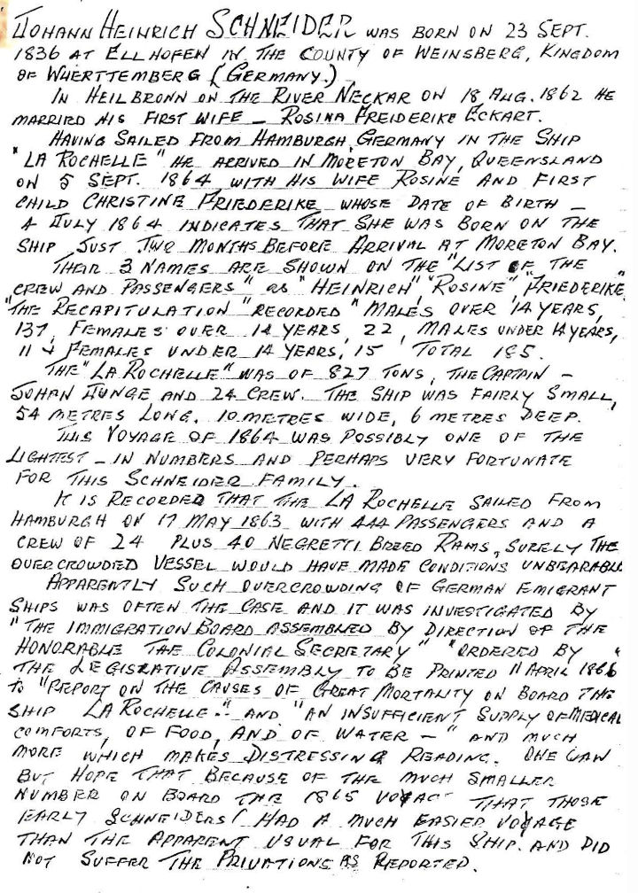
In Heilbronn on the River Neckar on 18 August 1862 he married his first wife - Rosina Friederike Eckart.
Having sailed from Hamburgh, Germany in the ship "La Rochelle" he arrived in Moreton Bay, Queensland on 5 Sept. 1864 with his wife Rosine and first child Christine Friederike whose date of birth - 4 July 1864 indicates that she was born on the ship just two months before arrival at Moreton Bay.
Their 3 names are shown in the "List of the Crew and Passengers" as "Heinrich", "Rosine", "Friederike". "The Recapitulation" recorded males over 14 years, 137, females over 14 years, 22, males under 14 years, 11 and females under 14 years, 15. Totall 185.
The "La Rochelle" was of 827 tons, the captain - Johan Junge and 24 crew. The ship was fairly small, 54 metres long, 10 metres wide, 6 metres deep. This voyage of 1864 was possibly one of the lightest - in numbers and perhaps very very fortunate for this Schneider family.
It is recorded that the La Rochelle sailed form Hamburgh on 17 May 1863 with 444 passengers and a crew of 24 plus 40 Negreti Breed Rams. Surely the overcrowded vessel would have made conditions unbearable.
Apparently such overcrowding of German immigrant ships was often the case and it was investigated by "The Immigration Board Assembled By The Direction Of The Honorable The Colonial Secretary" ordered by "The Legislative Assembly To Be Printed 11 APRIL 1866" to "Report On The Causes Of Great Mortality On Board The Ship La Rochelle..." and "An Insufficient Supply Of Medical Comforts, Of Food, And Of Water -" and much more which makes distressing reading. One can but hope that because of the much smaller number on board the 1865 voyage that those early Schneiders had a much easier voyage than the apparent usual for this ship and did not suffer the privations as reported.
JOHANN GEORG SCHNEIDER "George"Page 11
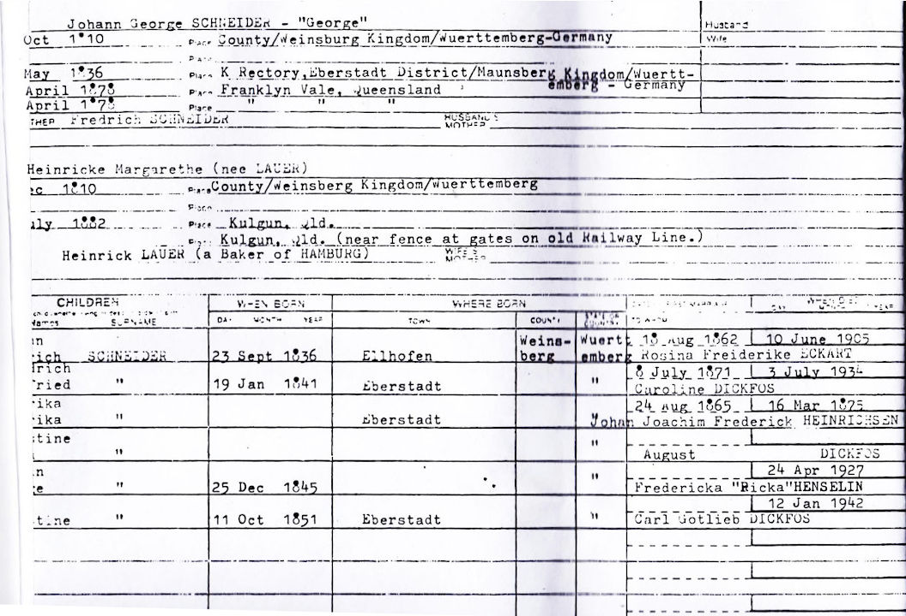Born: Oct 1810, County Weinsberg, Kingdom Wurttemberg-Germany Married: May 1836, K. Rectory Eberstadt, District Weinsberg, Kingdom Wurttemberg-Germany Died: April 1878, Franklyn Vale, Queensland Buried: April 1878, Franklyn Vale, Queensland Wife: Heinricke Margarethe (nee Lauer) Born: Dec 1810, County Weinsberg, Kingdom Wurttemberg-Germany Died: July 1882, Kulgun, Qld. Buried: Kulgun, Qld. (near fence at gates on old Railway Line) Father: Heinrick Lauer (a Baker of Hamburg) Children: 1. Johann Heinrich Schneider 23 Sept 1836 Ellhofen Weinsberg Wuerttemberg married 18 Aug 1862 to Rosina Friederike ECKART died 10 June 1905 2. Friedrich Gottfried Schneider 19 Jan 1841 Eberstadt Weinsberg Wuerttemberg married 8 July 1871 to Caroline Dickfos died 3 July 1934 3. Heinrika Friederika Schneider Eberstadt Weinsberg Wuerttemberg 4. Christine Sophia Schneider 5. Johann George Schneider 25 Dec 1845 Germany 6. Christine Schneider 11 Oct 1851 Eberstadt Weinsberg Wuerttemberg
JOHANN HEINRICH SCHNEIDER "Henry" eldest child of Johann George Schneider Snr. & Heinricke Margarethe Schneider (nee Lauer)Page 12
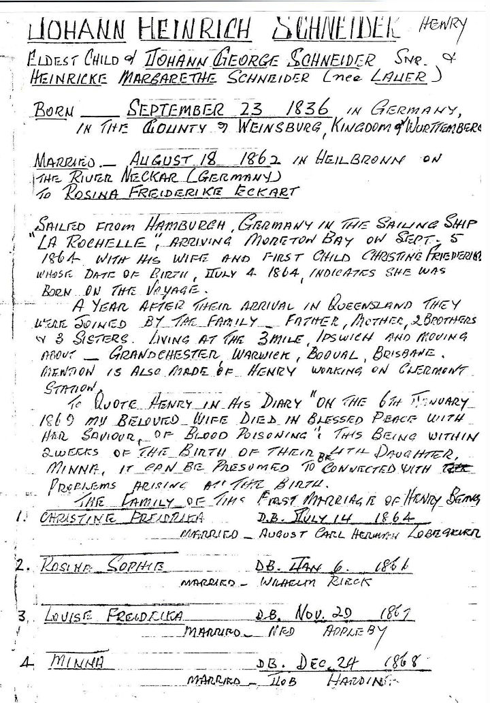
Born - September 23, 1836 - in Germany in the County of Weinsberg, Kingdom of Wurttemberg
Married - August 18, 1862 in Heilbronn on the River Neckar (Germany) to Rosina Friederike Eckart
Sailed from Hamburgh, Germany in the sailing ship "La Rochelle", arriving Moreton Bay on Sep. 5, 1864 with his wife and first child Christine Friederike whose date of birth, July 4 1864, indicates she was born on the voyage. A year after their arrival in Queensland they were joined by the family - father, mother, 2 brothers & 3 sisters. Living at 3 Mile, Ipswich and moving about - Grandchester, Warwick, Booval, Brisbane. Mention is also made of Henry working on Clermont Station.
To quote Henry in his diary "on the 6th January 1869 my beloved wife died in blessed peace with her Savior, of blood poisoning. This being within two weeks of the birth of their 4th daughter, Minna, it can be presumed to be connected with the problems arising at the birth.
The family of the first marriage of Henry being: 1. Christine Friederike D.B. July 14, 1864 married - August Carl Herman Lobegeier 2. Rosine Sophie D.B. Jan 6, 1866 married - Wilhelm Rieck 3. Louise Friederike D.B. Nov 20, 1867 married - Ned Appleby 4. Minna D.B. Dec 24, 1868 married - Job Harding
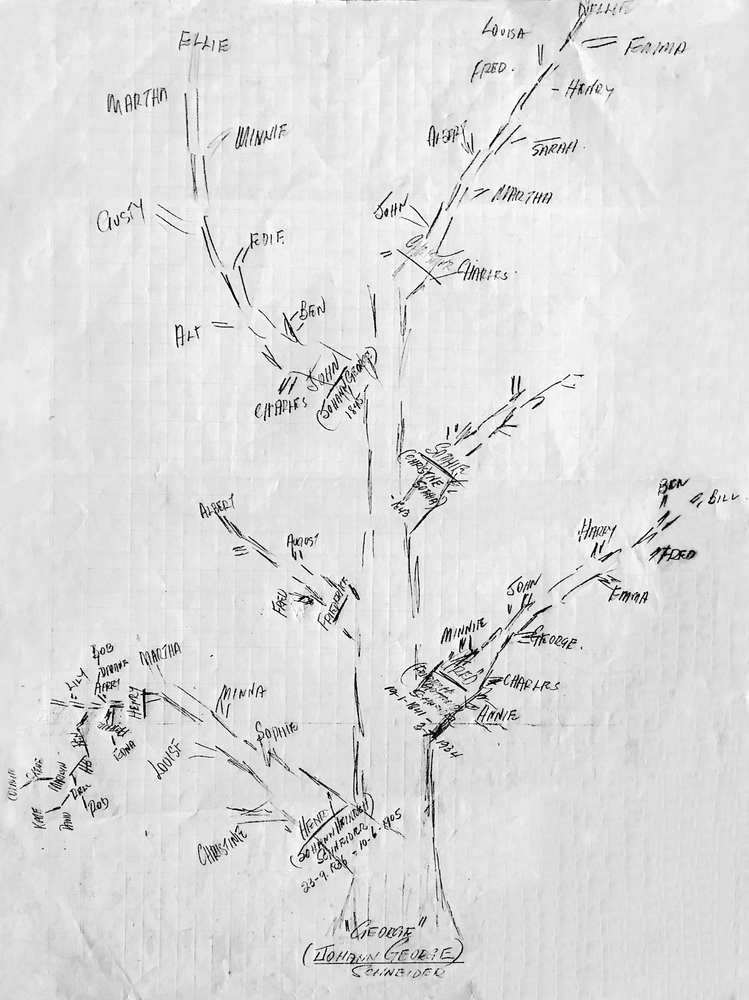The Family Tree for
Johann Georg Schneider (George, sometimes John) and his wife Heinricke Margarethe Lauer as well as a lot of their descendants
This tree was drawn by Hubert Benjamin Schneider, son of Benjamin Walter Schneider and grandson of Henry Schneider junior.
'George' is drawn at the base of the tree and each major branch represents one of his children in ascending order of their ages; Henry, Fred, Friederike, Sophie, John and Christine.
The shoots coming out of each branch are labelled with some of the descendants for that child.
(Clicking on the picture will open a larger version)